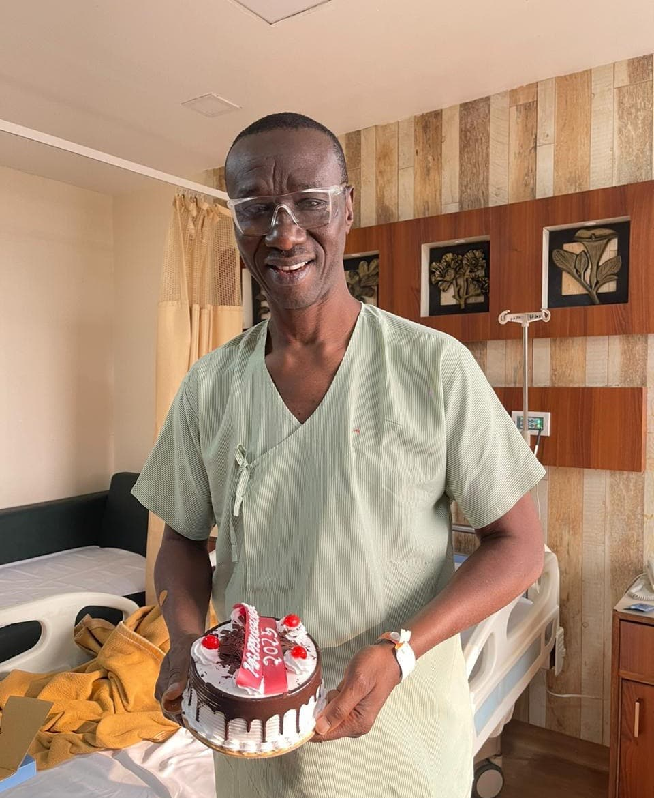
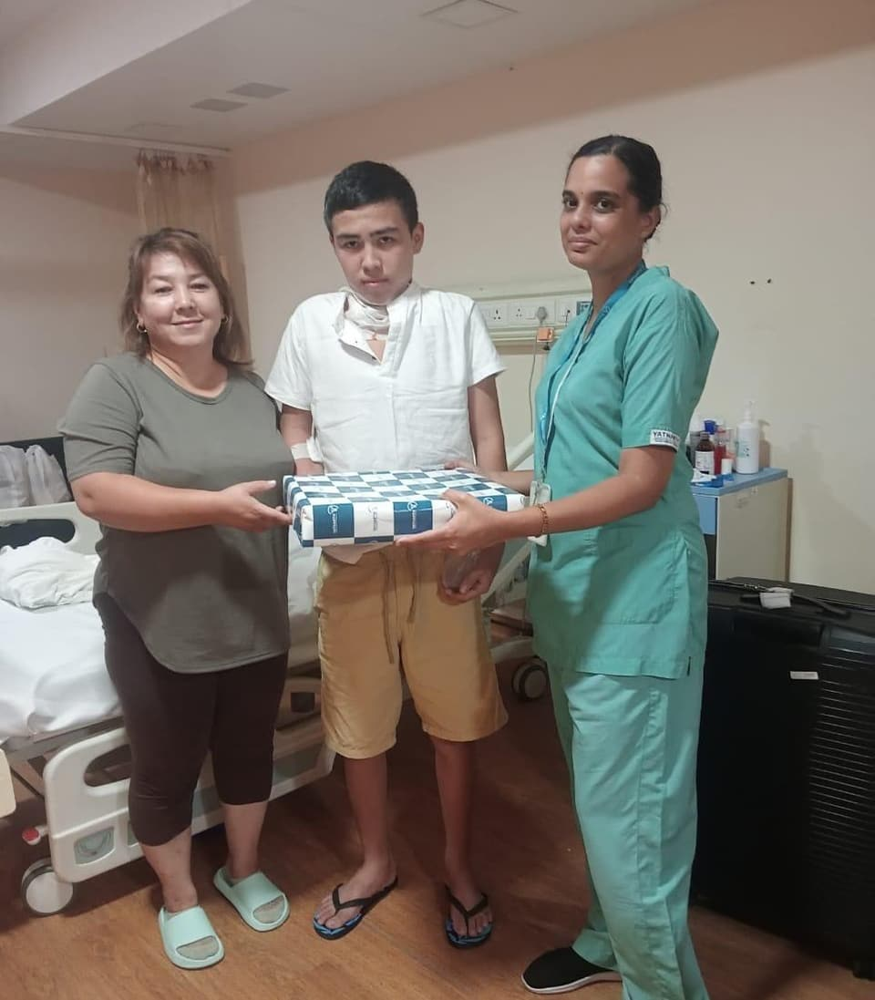

How MedTreat India Helps International Patients
Understand how clear guidance, suitable hospital options and value-for-money treatment planning can make treatment in India easier to navigate.
For many international patients, the hardest part of planning treatment abroad is not only the medical decision. It is the uncertainty around where to start, which hospitals may be suitable, how much treatment may cost, what travel will involve and who will help if plans change. India is known for strong clinical talent and modern hospitals, but patients still need a clear path. MedTreat India helps close that gap by offering practical support before, during and after the treatment journey.
Instead of pushing patients toward quick decisions, the goal is to help them understand treatment options, compare suitable hospitals and move forward with more confidence. That is especially important for families who want premium care but still need value-for-money treatment options that fit their real budget and timeline.
Clear Guidance Before You Travel
International patients often arrive at the planning stage with partial reports, mixed opinions and many open questions. Some know the likely treatment they need. Others only know their symptoms or a diagnosis shared in their home country. MedTreat India helps by creating a clearer starting point.
The first step is understanding the patient’s concern, available reports, timing and expectations. This early conversation matters because treatment planning should match the medical need, not just the name of a famous hospital. A patient who needs a second opinion may require a different pathway than someone already prepared for surgery. A family seeking a high-end private facility may have different priorities from someone balancing strong clinical care with tighter budget limits.
When patients receive clear guidance before travel, they are less likely to waste time, book the wrong appointments or feel lost after arriving in India. That early clarity can make the whole journey calmer and more efficient.
Support for Choosing Suitable Hospitals and Treatments
One of the biggest challenges for international patients is choosing among many hospitals, departments and treatment approaches. India has major hospital groups, specialist units and doctors across several cities. On the surface, every option may look strong. In practice, patients need help understanding which options may be more suitable for their condition, urgency and expectations.
MedTreat India supports this stage by helping patients compare suitable hospitals and likely next steps in a more structured way. This may include looking at specialty strengths, hospital environment, location, expected process and whether the patient appears to need diagnostics, a procedure, surgery or a broader treatment plan. The aim is not to overwhelm the patient with too many names, but to narrow the field into realistic options.
This kind of guidance is especially useful for patients seeking care in fields such as cardiology, orthopedics, oncology, fertility care and transplant review. Different treatments often require different hospital capabilities, specialist teams and levels of coordination. Clear comparison helps patients make more informed decisions without unnecessary confusion.
Value-for-Money Treatment Planning in India
Value-for-money treatment does not mean choosing the cheapest option. For most international patients, it means finding a sensible balance between clinical quality, hospital environment, treatment scope, travel needs and cost expectations. This is one of the main reasons patients consider India in the first place.
India offers access to premium private hospitals, experienced specialists and advanced facilities at costs that are often more practical than many other countries. Still, cost alone should never drive the plan. A patient needs to understand what is included, what may change after a specialist review and where travel or stay-related costs may affect the total experience.
MedTreat India helps patients think through this balance in a more practical way. Patients can discuss their expectations honestly, whether they are looking for a premium hospital experience, a strong specialist team, shorter waiting times or better value across the full journey. This supports clearer, more realistic decisions and helps families avoid surprises where possible.
For international patients, this balance of premium care and practical cost planning is often where India stands out. Good guidance helps patients benefit from that advantage more effectively.
Help With Reports, Appointments, Travel and Follow-Up
Medical travel is not only about treatment. It also involves reports, communication, appointments, timelines, airport arrival, local movement and post-treatment follow-up. Even when the hospital is excellent, patients can feel stressed if these parts are unclear.
MedTreat India helps by making the journey more coordinated from end to end. This may begin with sharing reports and identifying the likely next step. It continues through appointment planning, hospital communication and travel-related guidance before arrival. After treatment, support may still be needed for discharge planning, follow-up communication or understanding what the next stage of care should look like once the patient returns home.
This kind of patient support matters because international treatment journeys can change quickly. Additional tests may be required. Dates may shift. Families may need help understanding what comes next. A coordinated process reduces uncertainty and helps patients stay focused on recovery rather than logistics.

Why International Patients Choose India
International patients choose India for several reasons. The country offers broad specialist depth, many major private hospitals, modern infrastructure in leading centers and access to treatments across a wide range of specialties. For many patients, India also offers shorter waiting times and stronger value for the total cost of care.
Another reason is flexibility. Patients may be able to compare cities, hospital groups and treatment pathways in a way that better matches both their clinical needs and their budget. That makes India attractive for patients who want premium care but also want thoughtful planning around value.
Still, the benefit of treatment in India depends heavily on choosing the right path. The best experience usually comes when patients receive clear guidance early, compare suitable options carefully and travel with realistic expectations. That is where trusted coordination becomes important.
How to Start With MedTreat India
Starting is simple. A patient or family member can contact MedTreat India, share the medical concern and provide available reports. From there, the conversation can focus on the likely treatment area, suitable hospitals, travel timing and what kind of value-for-money planning makes the most sense for that case.
The process does not need to be rushed. A good start is one where the patient feels heard, informed and guided. Whether someone is looking for a second opinion, surgery planning, specialist treatment or coordinated travel support, the first goal is clarity.
International patients often need more than a hospital name. They need context, honest communication and practical support. MedTreat India helps provide that structure so the treatment journey in India feels more manageable from the beginning.
Start your treatment planning with clearer guidance
Share your case, discuss suitable hospital options and explore value-for-money treatment possibilities in India with personal support.